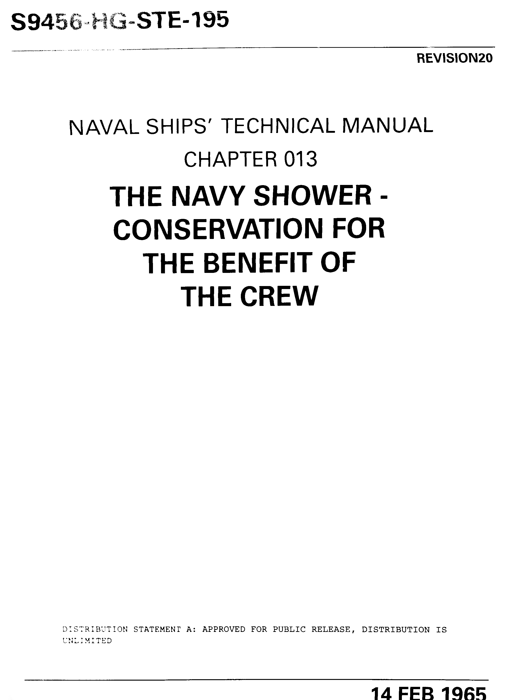

1
Prepare shower with soap, shampoo, and a towel.

2
After preparing supplies, remove clothing.

3
Open and step into shower.

4
Turn on shower head. The shock of cold water is very short-lived.

5
For 15 seconds, coat body with water. Use hands or a washcloth to fully douse body.
6
Turn off water and continue to lather skin for 30 seconds.

7
Rinse off the soap and shampoo with water for 20 more seconds.
8
Turn off water and remove ids soap. Step class="description"out of shower.